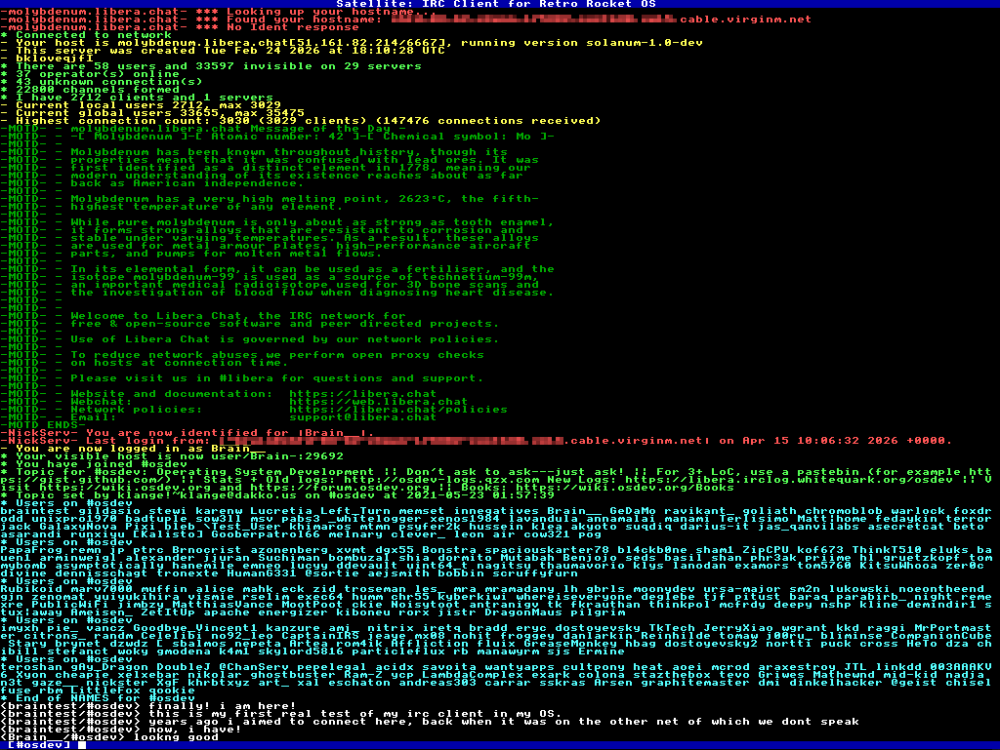

|
Retro Rocket OS
|
|
Retro Rocket OS
|
The Satellite IRC client. This is a simple IRC client specifically made for Retro Rocket OS.

If you do not specify a nickname, a random nickname will be allocated. This random nickname will be Rocketeer followed by 3 digits.
If you do not specify a hostname to connect to, the program will connect to irc.chatspike.net.
If the GECOS field is left empty, then the default Satellite IRC Client will be used.
If a port is not specified, the default IRC port 6667 will be used.
If DNS resolution fails, Satellite will attempt to connect using the hostname as an IP address.
After connecting, Satellite shows incoming server messages, channel messages, notices, joins, parts, quits, kicks, topics, user lists, and other IRC numerics.
The current target channel is shown in square brackets on the input line at the bottom of the screen.
Type a line and press Enter to send it to the current channel.
If a line begins with /, it is treated as a command and will not be sent as a message.
Satellite keeps track of the channels you have joined.
When you join a channel yourself, it becomes the current channel automatically.
Joining a channel automatically selects it as the current channel.
When you leave or are kicked from the current channel, Satellite selects another joined channel if one is available. If not, it falls back to the network name or -.
Join a channel.
Joining a channel automatically selects it as the current channel.
Leave a channel.
Switch the current input target to a channel you have already joined.
Show the list of joined channels.
The currently selected channel is marked with *.
Send a private message or message a channel without switching the current channel.
Alias of /msg.
Send an IRC NOTICE.
Change nickname.
If the nickname is already in use during connection, Satellite will automatically try the same nickname with an underscore appended.
Send a raw IRC line exactly as typed after the command.
Turn raw server line logging on or off.
When enabled, incoming raw IRC lines are shown in the scrollback prefixed with RAWLOG:.
Disconnect from the server.
If no quit message is given, Satellite uses Satellite IRC Client.
Query information about a user.
Shows user info, server, idle time, channels, and end of WHOIS.
Query users matching a mask or channel.
Displays WHO replies and end of WHO.
Query historical information about a nickname.
List channels on the server.
Shows channel names, user counts, and topics.
List users in a channel.
Displays the NAMES list for the channel.
View or set a channel topic.
View or change modes.
Show bans on a channel.
Show server information.
Show server administrative information.
Show server time.
Show server links.
Request a server map (if supported).
Satellite supports basic CTCP (Client-to-Client Protocol) messages.
Send an action message.
Displays as:
Send a CTCP request manually.
Satellite automatically handles:
Satellite shows the following directly in the chat window:
Unknown numerics are still shown, so important server replies are not silently lost.
Satellite uses a single shared scrollback buffer for all output.
/channel changes the current input target. It does not create separate per-channel windows.
Satellite replies to CTCP requests using NOTICE as required by IRC conventions.
The client currently uses plaintext IRC connection and does not support TLS.